| 富士山２
|
|
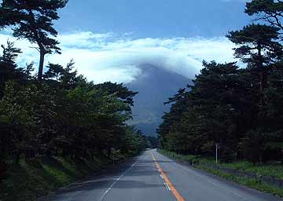 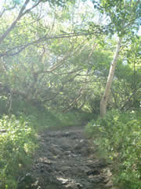
またしても ひとり富士山。ウチからアクセスの良い御殿場−須走口から再度登頂を目指して。ＧＯ。実は８月いっぱいでお山は閉めてしまうので、９月の富士登山は初心者向きではないらしい。んなことかまうもんかと、レッツラゴー。
やや、富士山傘雲だわ。前回は初手から間違えて下山道を登ってしまったけど、さすがに２度目なので間違えずに登山開始。 |
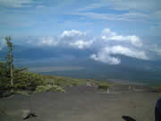 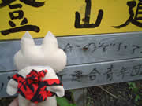
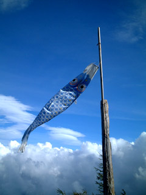 天気が穏やかで登りやすい。前回登ったお盆時よりも暖か。
台風通過の影響でちと風が強いけど、それもまた一興。顔に身体にピシパシ砂礫のムチ。
見下ろすと山中湖。
なんと友達がボート乗ってるとのメールが。
おおーいと手を振れば見えそーな、そんなかんじ。
９月に入って山小屋はだいぶ閉めてしまっているとはいえ、本５合目の山小屋も開いてた。鯉のぼりがゆらゆら。
うわ！タンクトップにサンダル姿のお姉ちゃんがいる！すわ幻？！
けど、ここらへんぐらいまではハイキング気分で登ってくる人もおおいもよう。 |
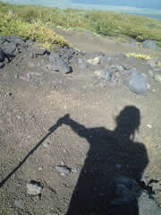
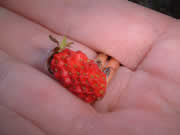
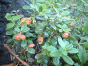 |
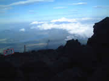
おやまは秋。影富士が眼下にくっきり。野いちご摘んで栄養補給。美味しいなー。あ、コケモモだー。まだあんまし赤くないけど。 |
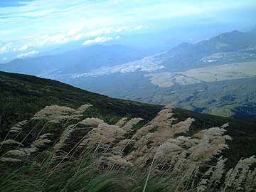 |
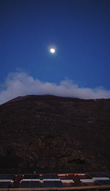 |
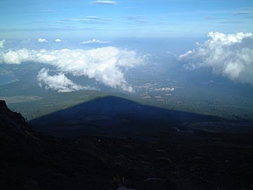 |
またまた７合目太陽館に宿泊。とゆーか、須走口の宿泊場所は９月になるとここぐらいしか選択肢が無い…
あー、アタマが痛い。どうやら高山病。天候がいいのでろくすっぽ高度順応しなかったのと、山小屋が開いてないのでトイレを我慢するために水分補給を怠ったのがまずかった。
私の他にも具合わるそーな人多し。まだ私は良いほーで、フラフラしながら、ケロケロ吐いてる人も多々。
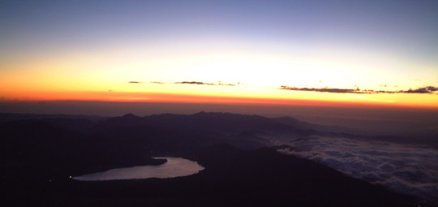
頭痛との戦いで夜が明けた。台風一過でかなり先まで晴れ渡って 。
いらっしゃいませご来光 。 |
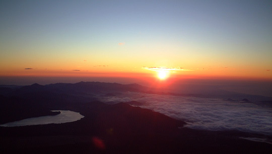
まーそんなこんなで、下山することに。朝焼けに染まる赤富士。 |
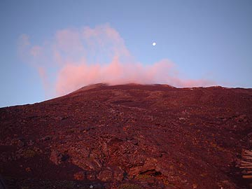 |
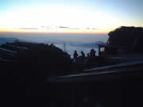
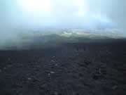 |
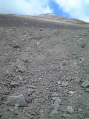
砂走りは楽しいなーと
ジュリジュリ走ってたら、靴の底が抜けました。
ガムテで補強。 |
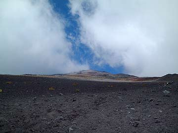 |
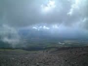 |
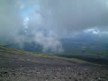 |
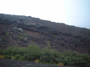 |
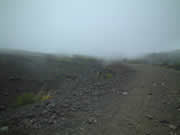
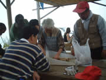 |
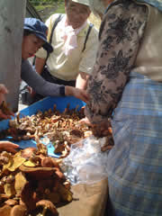 |
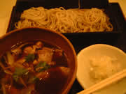
５合目に下りたらキノコ狩りの人がたくさん。
菊屋のおばあちゃんが食べられるキノコと毒キノコを分けてあげたました。いいなー！キノコ狩りしたい！！
御殿場で鴨せいろ食べて帰還。 |
| |
|
|
| |
|
|